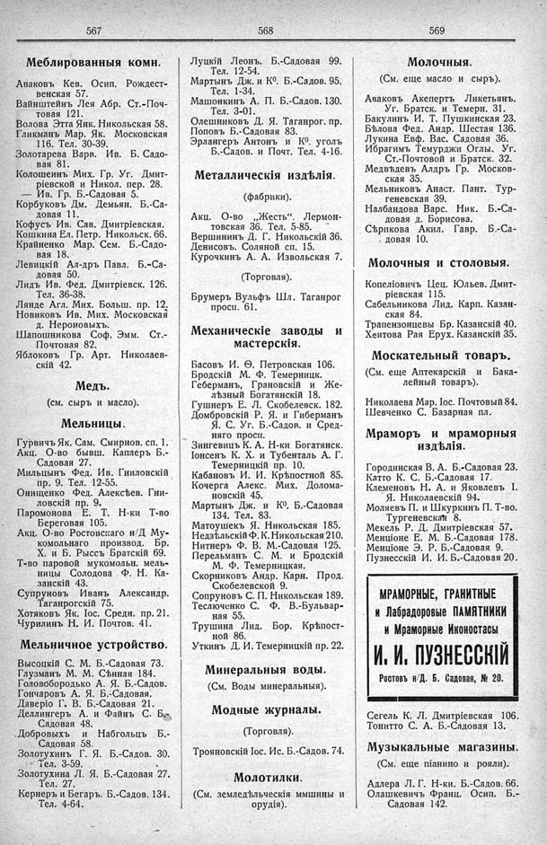

Лист источника 323
Скан

Распознанный текст
567
Меблированныя комн.
Аваковъ Кев. Осип. Рождест-
венская 57.
Вайнштейнъ Лея Абр. Ст.-Поч-
товая 121.
Волова Этта Янк. Никольская 58.
Гликманъ Мар. Як. Московская
116. Тел. 30-39.
Золотарева Варв. Ив. Б. Садо-
вая 81.
Колошеинъ Мих. Гр. Уг. Дмит-
ріевской и Никол. пер. 28.
— Ив. Гр. Б.-Садовая 5.
Корбуковъ Дм. Демьян. Б.-Са-
довая 11.
Кофусъ Ив. Сав. Дмитріевская.
Кошкина Ел. Петр. Никольск. 66.
Крайненко Мар. Сем. Б.-Садо-
вая 18.
Левицкій Ал-дръ Павл. Б.-Са-
довая 50.
Лидъ Ив. Фед. Дмитріевск. 126.
Тел. 36-38.
Лянде Агл. Мих. Больш. пр. 12.
Новиковъ Ив. Мих. Московская
д. Нероновыхъ.
Шапошникова Соф. Эмм. Ст.-
Почтовая 82.
Яблоковъ Гр. Арт. Николаев-
скій 42.
Медъ.
(см. сыръ и масло).
Мельницы.
Гурвичъ Як. Сам. Смирнов. сп. 1.
Акц. О-во бывш. Каплеръ Б.-
Садовая 27.
Мильцынъ Фед. Ив. Гниловскій
пр. 9. Тел. 12-55.
Онищенко Фед. Алексѣев. Гни-
ловскій пр. 9.
Паромонова Е. Т. Н-ки Т-во
Береговая 105.
Акц. О-во Ростовскаго н/Д Му-
комольнаго производ. Бр.
Х. и Б. Рыссъ Братскій 69.
Т-во паровой мукомольн. мель-
ницы Солодова Ф. Н. Ка-
занскій 43.
Супруновъ Иванъ Александр.
Таганрогскій 75.
Хотяковъ Як. Іос. Средн. пр. 21.
Чурилинъ Н. И. Почтов. 41.
Мельничное устройство.
Высоцкій С. М. Б.-Садовая 73.
Глузманъ М. М. Сѣнная 184.
Головобородько А. Я. Б.-Садов.
Гончаровъ А. Я. Б.-Садовая.
Даверіо Г. В. Б.-Садовая 21.
Деллингеръ А. и Файнъ С. Б.-
Садовая 48.
Добровыхъ и Набгольцъ Б.-
Садовая 58.
Золотухинъ Г. Я. Б.-Садов. 30.
Тел. 3-59.
Золотухина Л. Я. Б.-Садовая 27.
Тел. 27.
Кернеръ и Бегаръ. Б.-Садов. 134.
Тел. 4-64.
568
Луцкій Леонъ. Б.-Садовая 99.
Тел. 12-54.
Мартынъ Дж. и К⁰. Б.-Садов. 95.
Тел. 1-34.
Машонкинъ А. П. Б.-Садов. 130.
Тел. 3-01.
Олешниковъ Д. Я. Таганрог. пр.
Поповъ Б.-Садовая 83.
Эрлангеръ Антонъ и К⁰. уголъ
Б.-Садов. и Почт. Тел. 4-16.
Металлическія издѣлія.
(фабрики).
Акц. О-во „Жесть“. Лермон-
товская 36. Тел. 5-85.
Вершининъ Д. Г. Никольскій 36.
Денисовъ. Соляной сп. 15.
Курочкинъ А. А. Извольская 7.
(Торговля).
Брумеръ Вульфъ Шл. Таганрог
просп. 61.
Механическіе заводы и
мастерскія.
Басовъ И. Ѳ. Петровская 106.
Бродскій М. Ф. Темерницк.
Геберманъ, Грановскій и Же-
лѣзный Богатянскій 18.
Гушнеръ Е. Л. Скобелевск. 182.
Домбровскій Р. Я. и Гиберманъ
Я. С. Уг. Б.-Садов. и Сред-
няго просп.
Зингевицъ К. А. Н-ки Богатянск.
Іонсенъ К. Х. и Тубенталь А. Г.
Темерницкій пр. 10.
Кабановъ И. И. Крѣпостной 85.
Кочерга Алекс. Мих. Долома-
новскій 45.
Мартынъ Дж. и К⁰. Б.-Садовая
134. Тел. 83.
Матоушекъ Я. Никольская 185.
Недзѣльскій Ф. К. Никольская 210.
Нитнеръ Ф. В. М.-Садовая 125.
Перельманъ С. М. и Бродскій
М. Ф. Темерницкая.
Скорниковъ Андр. Карн. Прод.
Скобелевской 9.
Сопруновъ С. П. Никольская 189.
Теслюченко С. Ф. В.-Бульвар-
ная 55.
Трушина Лид. Бор. Крѣпост-
ной 86.
Уткинъ Д. И. Темерницкій пр. 22.
Минеральныя воды.
(См. Воды минеральныя).
Модные журналы.
(Торговля).
Трояновскій Іос. Ис. Б.-Садов. 74.
Молотилки.
(См. земледѣльческія ммшины и
орудія).
569
Молочныя.
(См. еще масло и сыръ).
Аваковъ Акепертъ Ликетьянъ.
Уг. Братск. и Темерн. 31.
Бакулинъ И. Т. Пушкинская 23.
Бѣлова Фед. Андр. Шестая 136.
Лукина Евф. Вас. Садовая 36.
Ибрагимъ Темурджи Оглы. Уг.
Ст.-Почтовой и Братск. 32.
Медвѣдевъ Алдръ Гр. Москов-
ская 35.
Мельниковъ Анаст. Пант. Тур-
геневская 39.
Налбандова Варс. Ник. Б.-Са-
довая д. Борисова.
Сѣрикова Акил. Гавр. Б.-Са-
довая 10.
Молочныя и столовыя.
Копеліовичъ Цец. Юльев. Дмит-
ріевская 115.
Сабельникова Лид. Карп. Казан-
ская 84.
Трапензонцевы Бр. Казанскій 40.
Хеитова Рая Ерух. Казанскій 35.
Москательный товаръ.
(См. еще Аптекарскій и Бака-
лейный товаръ).
Николаева Мар. Іос. Почтовый 84.
Шевченко С. Базарная пл.
Мраморъ и мраморныя
издѣлія.
Городинская В. А. Б.-Садовая 23.
Катто К. С. Б.-Садовая 17.
Клеменовъ Н. А. и Яковлевъ І.
Я. Николаевскій 94.
Моляевъ П. и Шкуркинъ П. Т-во.
Тургеневская 8.
Мекель Р. Д. Дмитріевская 57.
Менціоне Е. М. Б.-Садовая 178.
Менціоне Э. Р. Б.-Садовая 9.
Пузнесскій И. И. Б.-Садовая 20.
МРАМОРНЫЕ, ГРАНИТНЫЕ
и Лабрадоровые ПАМЯТНИКИ
и Мраморные Иконостасы
И. И. ПУЗНЕССКІЙ
Ростовъ н/Д. Б. Садовая, № 20.
Сегель К. Л. Дмитріевская 106.
Тонитто С. А. Б.-Садовая 13.
Музыкальные магазины.
(См. еще піанино и рояли).
Адлера Л. Г. Н-ки. Б.-Садов. 66.
Олашкевичъ Франц. Осип. Б.-
Садовая 142.